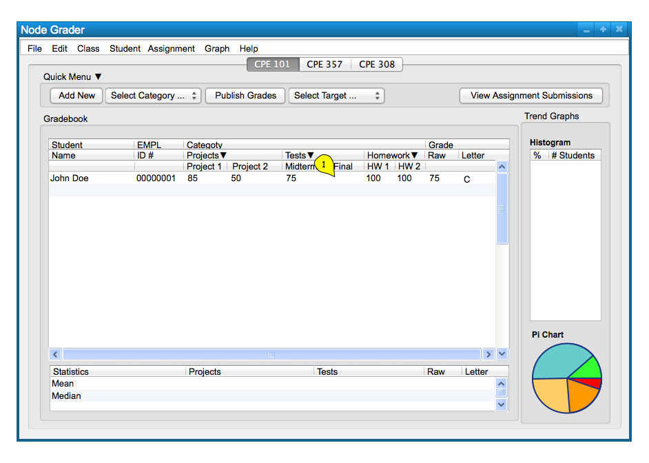
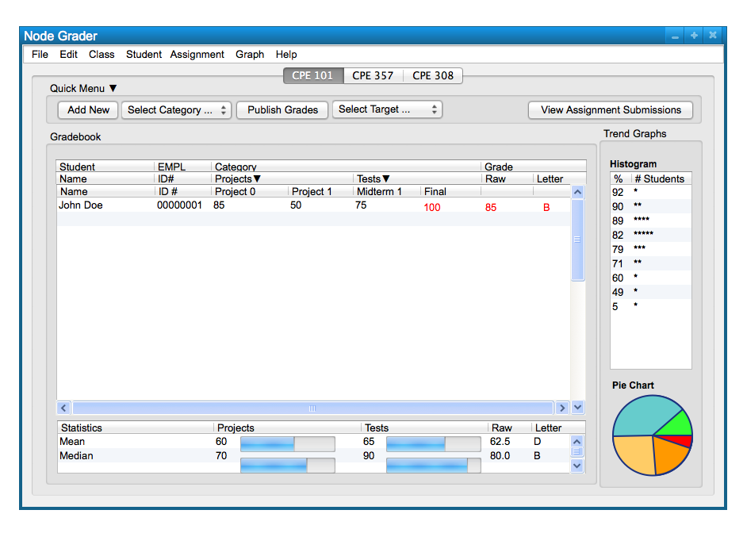

2.7.2. Predicting Grades
In order for a student to predict their final grades, they must first select an empty cell in which to put a predicted grade as shown in Figure 1.

Figure 1: Predicting Grades
Figure 2 shows shows the result of the stdent inputing their temporary grades into the Final grade cell. The temporary "predicted" grades are highlighted in red. These temporary grades are never saved, and therefore will be deelted upon closing of the Grader program.

Figure 2: Predicting Grades
Prev: gradebooks
| Next: submit
| Up: student-functions
| Top: index